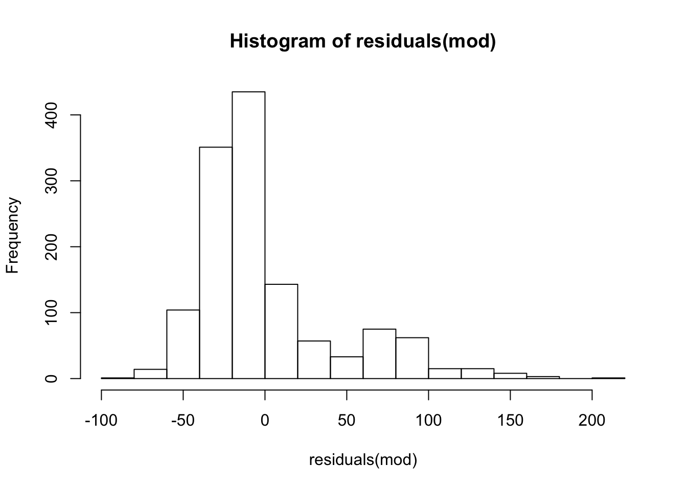
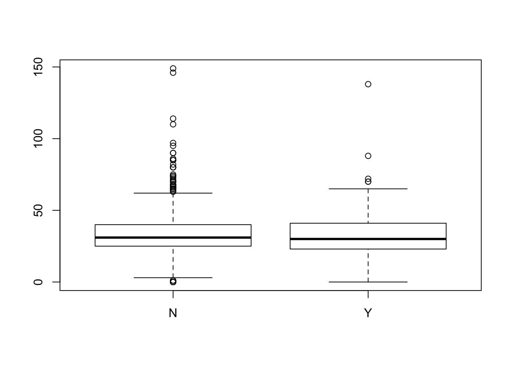

6 Statistical Inference
In this section we will cover some of the basic tools for statistical inference covered in an introductory statistics class.
6.1 ANOVA
We will demonstrate the use of ANOVA, but t-tests are quite similar.
Teaching Tip: When teaching non-majors incorporating data from the research of faculty teaching courses from other disciplines can increase student engagement and course relevance.For this section we are going to work with a dataset from a cancer drug development project that is part of a biology faculty member’s ongoing research at our campus, the data came from one of the student projects. Below is an image of one of the tumors.
CancerTumor
The measurements in the file are the percent of tumor growth under various drug treatments. TumorGrowth.csv. Load the data now and inspect the dataset.
Construct a graphical summary of your data using one of the tools from earlier.
We will also construct a numerical summaries of each group using the doBy package. Install and load it now.
For this I define a helper function:
msd = function (x) {c(m = mean(x), stdev = sd(x))}We apply this function using summaryBy.
To run an ANOVA use the command aov() by specifying the relationship and the data, as you did for summarizing the data.
mod = aov(Growth ~ Treatment, data = Tumor)Note that there is something missing that most intro stats students are asked for, what is it?
This can be fixed by wrapping the aov command with a summary(). Try it.
Post-hoc tests can be run by saving the ANOVA model to a variable and then passing it to TukeyHSD().
Try it here:
TukeyHSD(mod) Tukey multiple comparisons of means
95% family-wise confidence level
Fit: aov(formula = Growth ~ Treatment, data = Tumor)
$Treatment
diff lwr upr p adj
Control-Avastin 0.002222222 -0.029180472 0.033624916 0.9976809
Tor+Ava-Avastin -0.037222222 -0.068624916 -0.005819528 0.0137317
Torisel-Avastin -0.004444444 -0.035847138 0.026958250 0.9821827
Tor+Ava-Control -0.039444444 -0.070847138 -0.008041750 0.0080067
Torisel-Control -0.006666667 -0.038069361 0.024736027 0.9437365
Torisel-Tor+Ava 0.032777778 0.001375084 0.064180472 0.0374652There are other functions for the other types of post-hoc tests.
6.2 Testing for Proportions
For simplicity we are going to continue with the cleanTeslaBattery. Suppose we want to look at the relationship between Country and Model.
Create a two-way table and a bar plot for these variables.
cleanTeslaBattery = read.csv("Data/cleanTeslaBattery.csv")
tbl = table(cleanTeslaBattery$Location,cleanTeslaBattery$Model)
tbl
Model 3 LR Model S 100D Model S 60
Asia Pacific & Europe (excl UK) 0 3 22
Canada 0 0 3
UK 0 0 1
USA 4 2 20
Model S 60D Model S 70 Model S 70D
Asia Pacific & Europe (excl UK) 0 8 99
Canada 1 0 0
UK 1 0 0
USA 4 0 4
Model S 75 Model S 75D Model S 85
Asia Pacific & Europe (excl UK) 28 20 376
Canada 1 0 20
UK 0 1 7
USA 10 7 72
Model S 85D Model S 90 Model S 90D
Asia Pacific & Europe (excl UK) 88 1 90
Canada 9 2 2
UK 2 0 0
USA 13 0 15
Model S 90D 2015 Model S P100D
Asia Pacific & Europe (excl UK) 3 8
Canada 0 0
UK 0 0
USA 10 0
Model S P85 Model S P85+ Model S P85D
Asia Pacific & Europe (excl UK) 141 45 75
Canada 5 1 1
UK 0 0 0
USA 32 2 15
Model S P90D Model X 100D Model X 60D
Asia Pacific & Europe (excl UK) 4 7 0
Canada 0 1 1
UK 0 0 0
USA 3 4 0
Model X 75D Model X 90D Model X P90D
Asia Pacific & Europe (excl UK) 4 11 1
Canada 0 0 0
UK 0 0 0
USA 0 5 0
Unspecified 85 kWh
Asia Pacific & Europe (excl UK) 24
Canada 0
UK 0
USA 0Chi-squared is as simple as running chisq.test() on the two-way table.
chisq.test(tbl)
Pearson's Chi-squared test
data: tbl
X-squared = 254.16, df = 69, p-value < 2.2e-16Tests for proportions require the prop.test command and require just inputting the desired counts and/or population proportions. We won’t do an application here, but if 23 of 120 have a trait and we would like to see if the proprtion is significantly greater than 0.15, we might use the command
prop.test(23,120, p=0.15, alternative = "greater")
1-sample proportions test with continuity correction
data: 23 out of 120
X-squared = 1.3235, df = 1, p-value = 0.125
alternative hypothesis: true p is greater than 0.15
95 percent confidence interval:
0.136025 1.000000
sample estimates:
p
0.1916667 As with the t-tests, notice that the confidence interval is an added bonus, but requires the two-sided option.
A two-sample test for proportions may be run similarly with a slight modification:
prop.test(c(31,40),c(60,85), alternative = "greater")
2-sample test for equality of proportions with continuity
correction
data: c(31, 40) out of c(60, 85)
X-squared = 0.14289, df = 1, p-value = 0.3527
alternative hypothesis: greater
95 percent confidence interval:
-0.1066671 1.0000000
sample estimates:
prop 1 prop 2
0.5166667 0.4705882 where the first list specifies the counts with the trait in each of the two groups and the second list consists of the sample sizes for each of the two groups.
6.3 Linear Regression
Let’s go back to the Tesla Battery Data from earlier. We did linear regression when we added the regression line earlier, but now we will explore some of the other available tools with regression.
cleanTeslaBattery = read.csv("Data/cleanTeslaBattery.csv")Implement the linear model from before to look at the relationship between the Mileage (MileageKM) and Watt Hours Per KM (WattHoursPerKM) and assign the model to the variable mod
mod = lm(WattHoursPerKM ~ MileageKM, data = cleanTeslaBattery)
summary(mod)
Call:
lm(formula = WattHoursPerKM ~ MileageKM, data = cleanTeslaBattery)
Residuals:
Min 1Q Median 3Q Max
-80.060 -26.278 -11.197 8.352 206.763
Coefficients:
Estimate Std. Error t value Pr(>|t|)
(Intercept) 2.439e+02 1.743e+00 139.901 < 2e-16 ***
MileageKM -1.766e-04 2.500e-05 -7.063 2.63e-12 ***
---
Signif. codes: 0 '***' 0.001 '**' 0.01 '*' 0.05 '.' 0.1 ' ' 1
Residual standard error: 42.5 on 1315 degrees of freedom
(22 observations deleted due to missingness)
Multiple R-squared: 0.03655, Adjusted R-squared: 0.03582
F-statistic: 49.89 on 1 and 1315 DF, p-value: 2.628e-12We can also easily inspect the residuals by calling the residual() function on the model. Try it:
hist(residuals(mod))
Additionally transforms of any of the variables can be performed in the following way:
lm(WattHoursPerKM ~ log(MileageKM), data = cleanTeslaBattery)
Call:
lm(formula = WattHoursPerKM ~ log(MileageKM), data = cleanTeslaBattery)
Coefficients:
(Intercept) log(MileageKM)
286.59 -5.02 lm(sqrt(WattHoursPerKM) ~ MileageKM, data = cleanTeslaBattery)
Call:
lm(formula = sqrt(WattHoursPerKM) ~ MileageKM, data = cleanTeslaBattery)
Coefficients:
(Intercept) MileageKM
1.555e+01 -5.510e-06 Finally, we left out the correlation coefficient. The call for the correlation coefficient is a little different as it doesn’t use relations cor(x,y, use = "pairwise.complete.obs", method = "pearson"). Try the command here for the Mileage and Watt Hours Per KM.
Note that the use option has been specified to omit pairs of correlations where ther is an NA, and the method controls the type of correlation.
6.4 t-tests
Here is a very quick overview of t-tests. We are going to take a look at the difference in weight gain be smoking and non-smoking mothers in Kings County. Load the dataset
Kings <- read.csv("Data/KingCounty2001.csv") Take a look at the relationship between smoker and wgain.
boxplot(wgain ~ smoker, data = Kings )
summary(Kings$smoker) N Y
2325 175 two-sample t-test syntax is nearly identical to ANOVA syntax, except we need to replace the aov with t.test and specify the type of alternative, either “greater”, “less” or “two.tailed”, using the alternative option.
t.test(wgain ~ smoker, data = Kings, alternative = "greater")
Welch Two Sample t-test
data: wgain by smoker
t = -0.65319, df = 189.21, p-value = 0.7428
alternative hypothesis: true difference in means is greater than 0
95 percent confidence interval:
-3.083485 Inf
sample estimates:
mean in group N mean in group Y
32.21806 33.09143 Note that confidence intervals are included, but the alternative should be “two.sided.”
One-sided t-tests require specifying only a single quantitative variable and also specifying the value from the null hypothesis. An example for testing that the mean wgain is different from 9.4 is
t.test(Kings$wgain, mu = 9.4, alt = "two.sided")
One Sample t-test
data: Kings$wgain
t = 85.31, df = 2499, p-value < 2.2e-16
alternative hypothesis: true mean is not equal to 9.4
95 percent confidence interval:
31.75331 32.80509
sample estimates:
mean of x
32.2792 Other options like the conf.level are described under the help for the function.
Try computing a 90% confidence interval for the mean gest.
6.5 Paired t-test
Paired t-tests require data in the wide format, that is two columns side by side, perhaps like this
pairdat = data.frame(pre=c(23,20,30,29),post=c(25,21,27,31))
pairdat pre post
1 23 25
2 20 21
3 30 27
4 29 31Note this is for example only, not for validity.
t.test(pairdat$pre, pairdat$post, paired=TRUE)
Paired t-test
data: pairdat$pre and pairdat$post
t = -0.42008, df = 3, p-value = 0.7027
alternative hypothesis: true difference in means is not equal to 0
95 percent confidence interval:
-4.287869 3.287869
sample estimates:
mean of the differences
-0.5